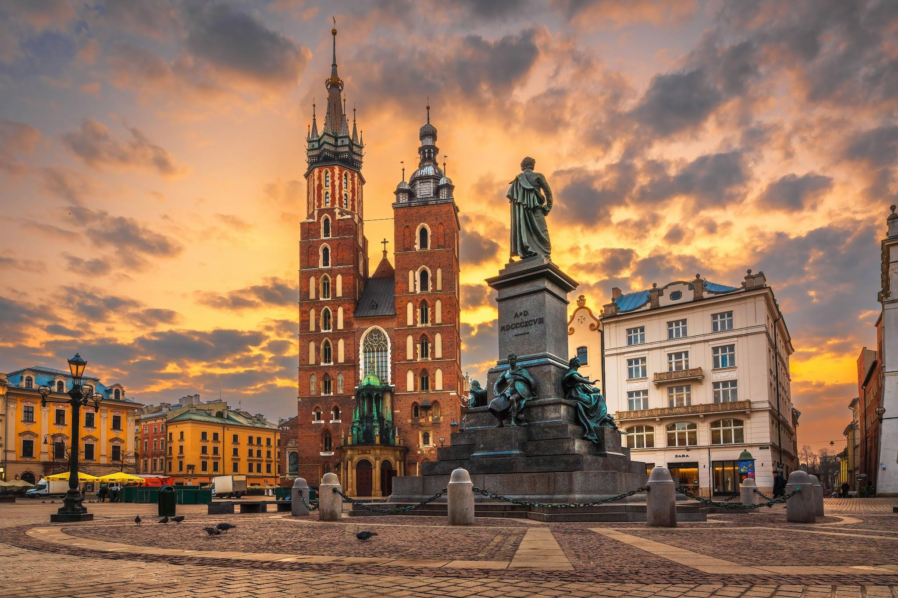

Our journey from Berlin to Kraków by train takes us across Central Europe — a relaxing and scenic way to travel between two historic cities. The trip takes 7, without any transfers. We’ll pass through small towns and rural countryside.
We will either take public transport or walk (a mile) to the hotel.
